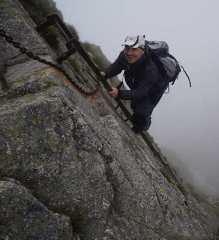
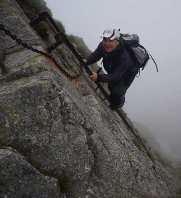

Employment history
Sales assistant at Spirála Ostrava z.ú.
10/10/2020- responsible for running small e-shop
- coeditor of organizational web
- performing other sales tasks
System engineer at AT&T supporting BlueSky (IBM / AT&T co-venture) customers in the EMEA region
- APAR applicability checks, LMAC changes which include APAR fix and BAU activities.
- performing configuration changes on network devices and network applications.
- experience on the devices listed : Cisco (Nexus, Catalyst, ACE, ASA, ISR, ASR), CheckPoint, F5 BIG-IPLTM
Senior telecomunications specialist - NSRU TIER1 /IP/DSL Team at OKIN BPS
 01/06/2015 – 31/07/2015
01/06/2015 – 31/07/2015
Junior telecomunications specialist - NSRU TIER1 /IP/DSL Team at OKIN BPS
01/04/2014 – 01/06 2015
- performing initial diagnostics, report circuits to the local PTT, and assist in localizing the fault be it with the customer, PTT or FOPS until the final resolution.
- working with latency, packet loss and QoS issues as well routing problems.
Network Engineer - 24/7 Managed Services at OKIN Outsourcing

01/10/2008 – 01/03/2014
- providing 24/7 technical and troubleshooting support to Verizon Business' customers
- creating and managing faults opened with locall providers worldwide
- working for major Verizon Business' customer ING in Poland as customer service care support

- MVIC circuits, both serial lines & Ethernets
- ADSL/SDSL circuits (MPLS, SIG, IP VPN & IP Dedicated)
- ISDN & PSTN circuits, ETHERNET lines
- MLAN (Managed LAN) including Wireless
- Cisco routers

 
